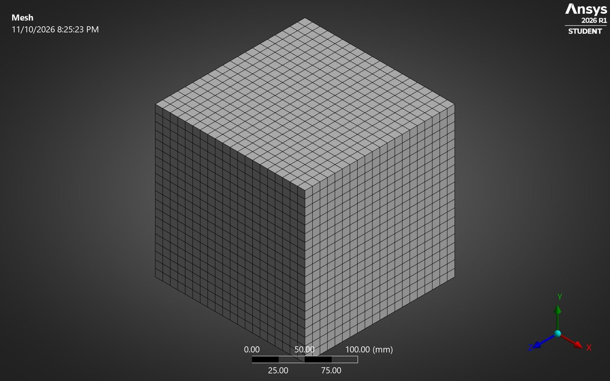
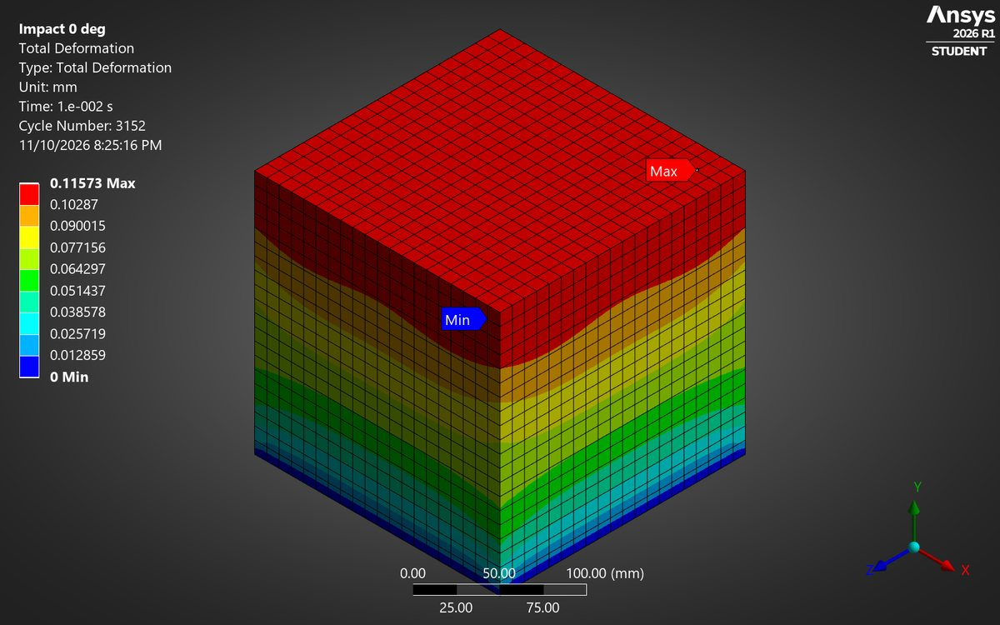
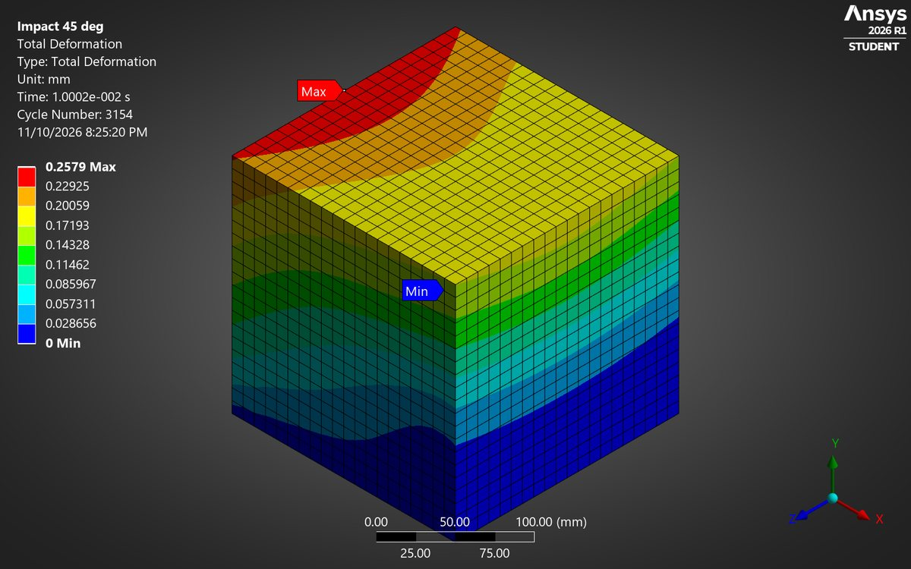
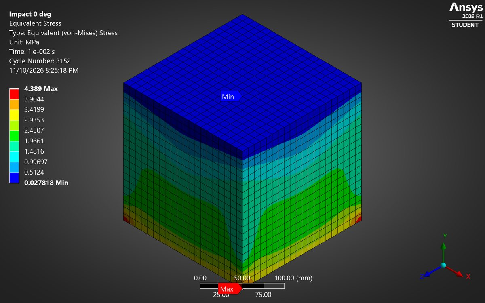
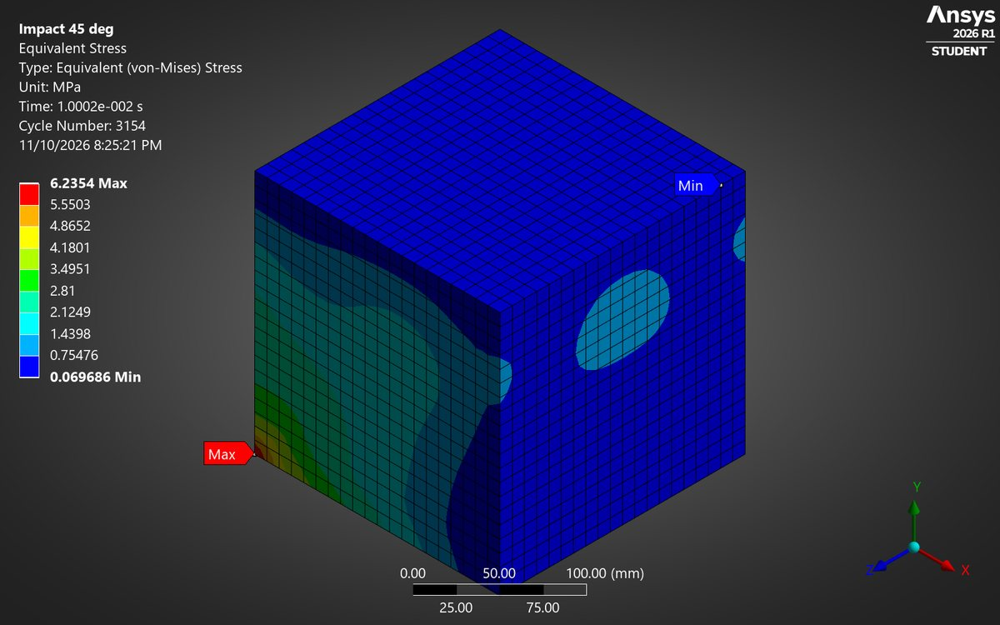

Same block, same speed, only the direction changes. The angled hit deforms the epoxy 2.3 times more than the head-on one.
See how the direction of a sudden load changes the response of an epoxy block. This was the first stage of a course study on self-healing polymer composites: before adding any healing agent, find out how the plain matrix reacts to a hit.
A 200 mm epoxy block (E = 3 GPa, ν = 0.35, ρ = 1200 kg/m³) is clamped at its base and given a 1.41 m/s initial velocity, either straight along its height (0°) or at 45°, as (1, 1, 0) m/s. ANSYS Explicit Dynamics follows the stress waves for 10 ms on a 10 mm hex mesh (8,000 elements). The original 2024 setup was rebuilt by hand in Mechanical 2026 R1.
Head-on, the block peaks at 0.13 mm. At 45° it reaches 0.30 mm and the stress rises from 4.7 to 7.4 MPa, highest at the clamped base. The angled hit has a sideways part that shears the block, and shear waves in epoxy travel at about half the speed of compression waves, so the block moves further before it stops.
| Case | Initial velocity | Peak deformation | Peak von Mises stress | Hand check |
|---|---|---|---|---|
| 0° (head-on) | (0, 1.41, 0) m/s | 0.13 mm | 4.7 MPa | 0.14 mm |
| 45° | (1, 1, 0) m/s | 0.30 mm | 7.4 MPa | about 0.23 mm |





Contour images are at the end of the run (10 ms). Table values are peaks over the whole 10 ms. Next step from the original study: a projectile hitting a thin composite panel, with healing capsules in the matrix.